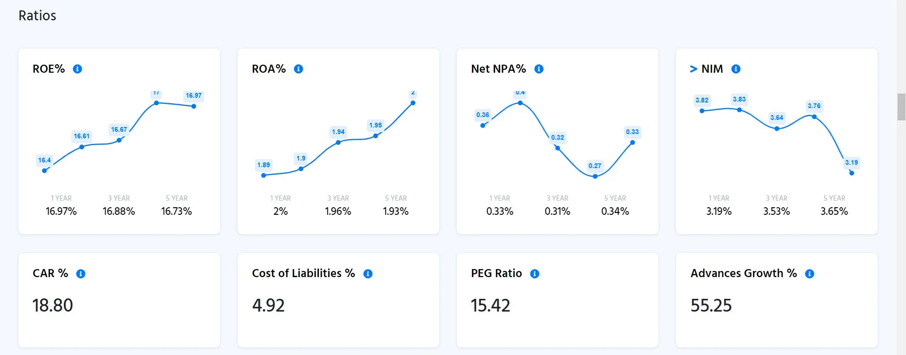
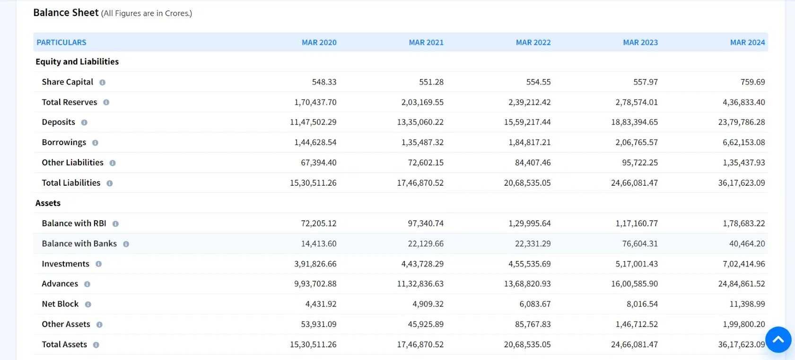
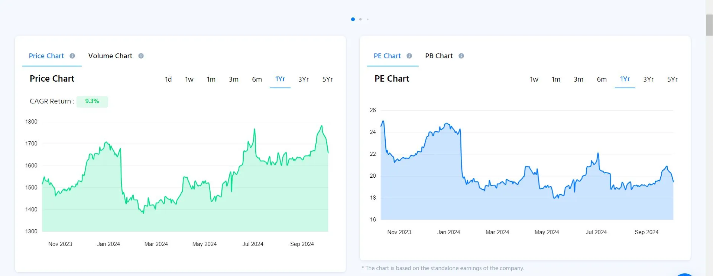
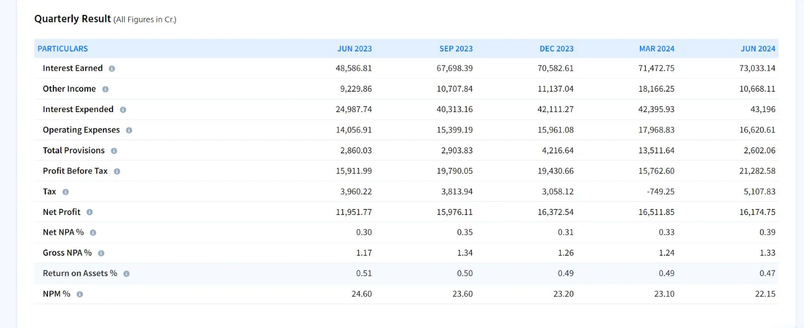

Table of Content
- What is Fundamental Analysis?
- Why we use Fundamental Analysis
- Fundamental Stock Analysis Components
- Steps to Perform Fundamental Stock Analysis
- Advantages of Fundamental Analysis
- Limitations of Fundamental Analysis
- Conclusion
- Frequently Asked Questions
Fundamental stock analysis : Top points of Fundamental Analysis
Fundamental stock analysis is a method used by investors to research a company’s stock by investigative many factors that influence its financial health. It’s about looking past data just the stock price and others data to understanding a company health.
What is Fundamental Analysis?

It is core of investing, fundamental stock analysis goals to analysis a company’s essential value. Fundamental analysis checked company value such as industry position, financial performance, Management and Strategy and overall company economic conditions. By understanding this value, investors can decide whether to buy, sell or hold a stock.
Why we use Fundamental Analysis?
i) Long-Term Investment:
Fundamental stock analysis is often used by long-term investment. It helps investors identify companies that are undervalued, meaning their stock price is lower than their actual worth or overvalued.
ii) Informed Decision-Making
It provides a solid basis for investment decisions rather than relying on market trends.
iii) Risk Management:
By analysis financial health, investors can identify risks and make more right decisions.
Fundamental Stock Analysis Components
1. Financial Statements: -
Financial Statements are important for fundamental analysis. Companies provide a detailed about company's performance. The three main types are:
i) Income Statement:
This document shows a company’s revenues and expenses over a specific time, usually a quarter or a year. Key points to consider:
1. Net Income:
What remains after all expenses are taken out of revenue is called net income. A positive net income indicates that the company has an increasing rate of earnings.
2. Revenue:
The total money earned from sales.

ii) Balance Sheet:
Balance Sheet shows an overall of a company equity, liabilities and assets at a specific time.
1. Assets:
Assets are the things that the company owns such as cash, land, inventory, accounts receivable, buildings.
2. Equity:
The difference between assets and liabilities, indicating the owners' equity in the company.
3. Liabilities:
What the company owes (loans, unpaid bills).
iii) Cash Flow Statement
It shows how cash is being traded in and out of the company. It’s divided into three sections:
1. Operating Activities:
Cash generated from normal business operations.
2. Financing Activities:
It refers to company all cash transactions.
3. Investing Activities:
Cash used for investments.

2. Important Financial Ratios: -
Financial ratios help investors see the performance of a company before investing. Let's discuss some important ratio.
i) Debt-to-Equity Ratio
Financial leverage of any company can be measured with this ratio
1.Formula: Debt to Equity ratio = Total Debt / Total Equity
2. A lower ratio usually indicates less risk.
ii) Price-to-Earnings (P/E) Ratio:
This ratio compares a company’s current share price to its earnings per share (EPS).
1. Formula: P/E ratios formula = Share Price / Earnings per Share.
2. A high P/E may indicate that a stock is overvalued, while a low P/E might suggest it’s undervalued.
iii) Return on Equity (ROE):
This ratio shows how effectively a company uses shareholders' equity to generate profits.
1. Formula: ROE = Net Income / Shareholders' Equity
2. Return on equity short form is ROE. The higher the return and equity the better. showing effective use of equity.
3. Economic Indicators
Economic conditions can greatly impact a company’s performance. Some important indicators:
i) Economic Growth
A growing economy generally leads to higher sales and profits for companies.
ii) Interest Rates
High interest rates can increase borrowing costs for companies, affecting profits.
4. Industry Analysis
Understanding the company industry.
i) Market Trends
Is the industry growing or decrease. Look for trends that could affect future profits.
ii) Regulations
Are there any laws or regulations that impact the industry.
iii) Competition
Who are the main competitors. How does the company differentiate itself.
5. Management and Strategy
A company's management team and their strategic decisions can greatly impact its success.
i) Experience
Does the management team have a strong track record in the industry.
ii) Performance
How has the management responded to challenges in the past.
iii) Vision
What are the company's goals. Are they realistic and achievable.

Steps to Perform Fundamental Stock Analysis
Now that we understand the components of fundamental analysis.
Research the Company:
Start by gathering basic information about the company, such as its history, products & market position. Read the company’s website and news articles or any Fundamental Stock Analysis website or software.
i) Calculate Key Ratios:
Use the key financial ratios discussed earlier. Compare these ratios with industry averages to see how the company stands against its peers.
ii) Evaluate Market Conditions
Look at economic indicators and industry trends. Are there any upcoming challenges or opportunities.
iii) Consider Management:
Research the company's leadership and their past decisions. Good management helps a company thrive and survive difficult situations.
iv) Analyze Financial Statements:
To analyze financial statements three important statements are looked at balance sheet, income statement and cash flow statement. Identify company revenue, profit margins & debt levels.
v) Make a Decision:
Through these few methods we can expect how this stock will fare. Is it undervalued or overvalued.
Advantages of Fundamental Analysis: -
i) Long-Term Perspective:
Fundamental analysis is based on analysis of subsequent periods. It is not analyzed based on short period of time.
ii) Identifying Value
Investors can find undervalued stocks that have strong potential for growth.
iii) Informed Decision-Making
It helps investors make educated choices based on data rather than speculation.
Limitations of Fundamental Analysis: -
i) Time-Consuming
Analysing financial statements and industry conditions can be a lengthy process.
ii) Changing Variables
Economic conditions and industry trends can change rapidly, making predictions challenging.
iii) Market Sentiment
Stock prices can be influenced by market sentiment and trends that fundamental analysis may not capture.
Conclusion
Fundamental analysis is very important for investors as it helps them make right decisions. By investigative financial statements, calculating important ratios and considering economic factors, you can gain a deeper understanding of a company’s true value. This method inspires a thorough and careful approach to investing, helping you identify potential opportunities and risks.
Investing is not just about buying stocks. it’s about understanding what you’re investing in. By applying fundamental analysis, you can become a more knowledgeable and confident investor and also check our Disclaimer page.
Frequently Asked Questions(FAQs)
How do I find financial statements for a specific company?
To find financial statements for a specific company Company’s Website, Financial News Websites, Stock Market Apps etc.
Can you explain discounted cash flow (DCF) valuation?
DCF valuation calculates the present value of a company’s expected future cash flows to see how much it’s worth today. It helps investors decide if a stock is undervalued or overvalued.